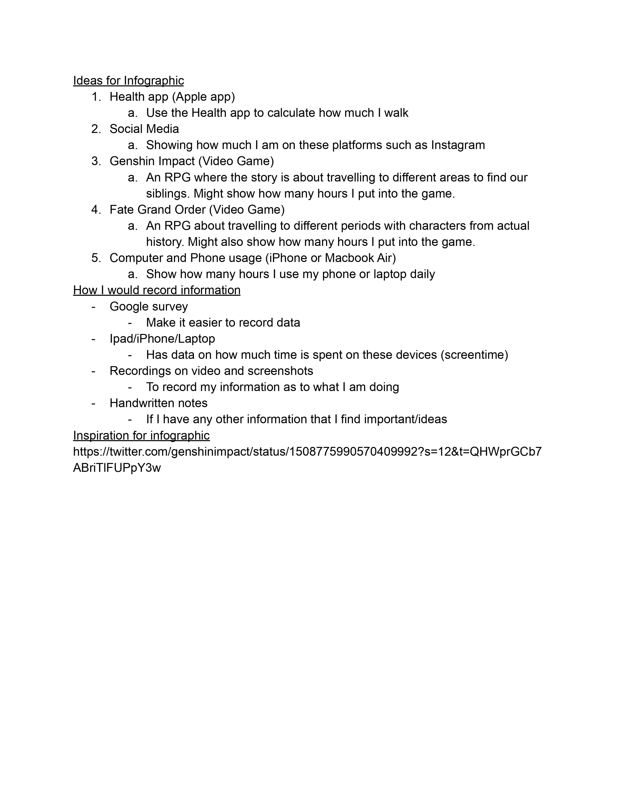
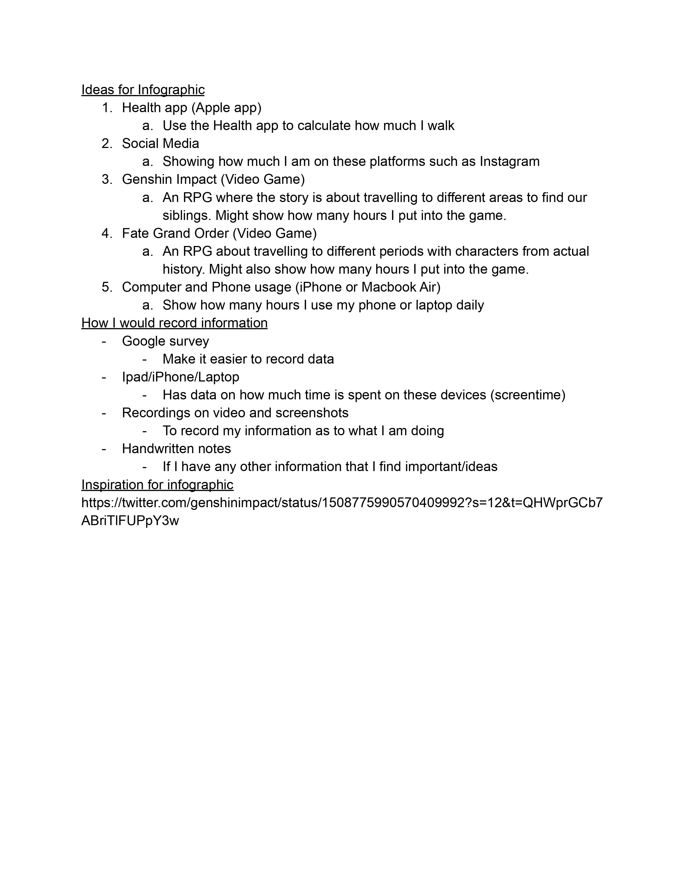

For Assignment 3, I decided to create an Infographic around
a video game that I play called Genshin Impact.
As for my ressearch, I decided to look into some research
that surrounding the game, such as how many times I played it
throughtout the day, the enemies that I fought and the activities
that I did on a daily basis.
For my original sketch, I was insipired by the graphics of the game and wanted to incorperate it into my poster.


These are some of the drafts that I created after my first sketch.

This is what my final looks like after some revision.
I tried to make the graphs more legible to read
since I noticed before the graphs were hard to read.